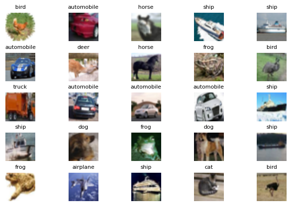
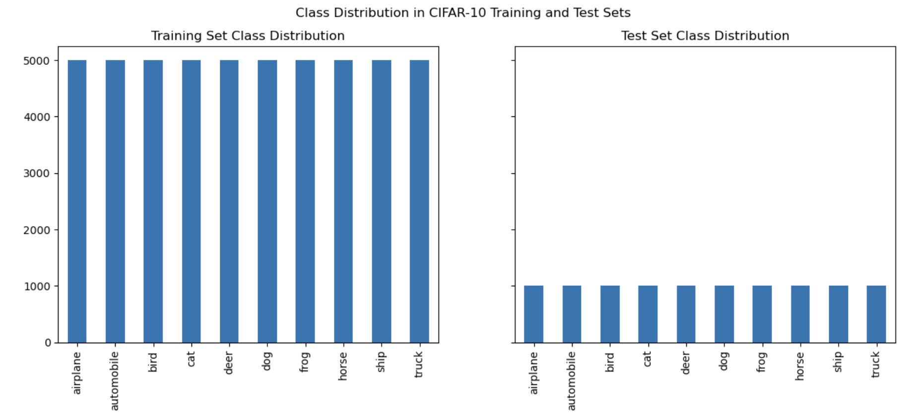
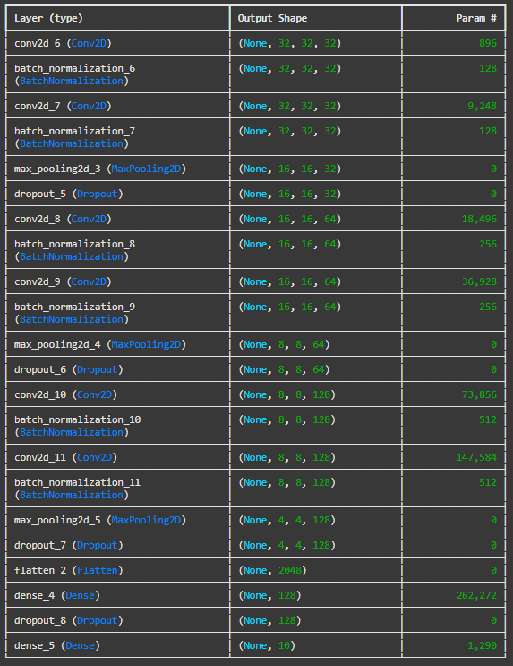
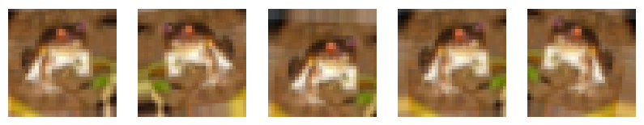
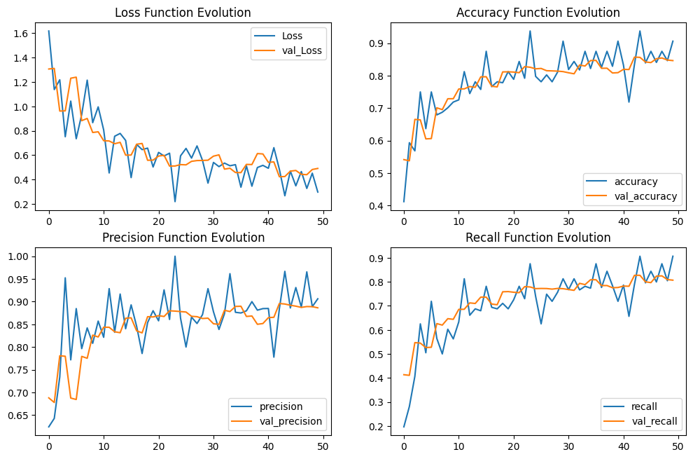
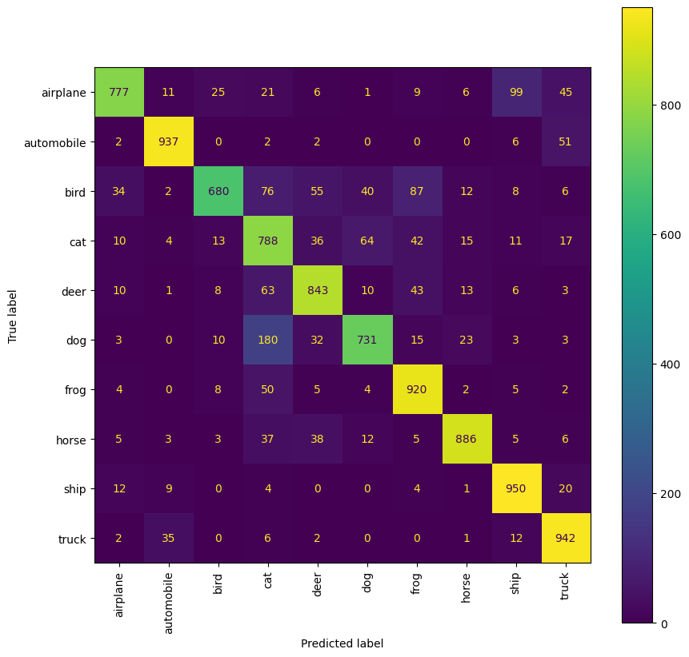

Abstract

The CIFAR-10 dataset is a collection of 60,000 32x32 color images divided into 10 distinct
categories, including airplanes, cars, birds, and more. This dataset is widely recognized as a
benchmark for image classification tasks in the field of deep learning.
This study introduces a Convolutional Neural Network (CNN) model specifically designed to classify
CIFAR-10 images. Leveraging the inherent strengths of CNNs in feature extraction and classification,
our architecture incorporates:
- Multiple convolutional layers to learn hierarchical features from images.
- Max-pooling layers to reduce spatial dimensions and extract essential features.
- Fully connected layers for robust classification.
The study also explores various CNN training strategies, including hyperparameter tuning and
architectural variations. Our trained model demonstrates competitive accuracy, emphasizing the
efficiency and robustness of CNNs, especially in resource-constrained environments.
These findings underline the potential of CNNs for real-world applications in image classification,
showcasing their capability to deliver high performance with optimized computational resources.
Introduction

Image classification is a fundamental task in computer vision, involving the categorization of images
into predefined classes based on visual characteristics. This capability is crucial for a wide range
of applications, including:
- Autonomous Vehicles: Identifying road signs, pedestrians, and obstacles.
- Medical Diagnostics: Analyzing medical images to detect diseases or anomalies.
- Security Systems: Recognizing faces, objects, and activities in surveillance
footage.
Convolutional Neural Networks (CNNs) have emerged as the leading model for image classification
tasks, owing to their superior feature extraction capabilities. By leveraging their hierarchical
structure, CNNs can efficiently process structured datasets like CIFAR-10, identifying patterns and
features with high accuracy.
Google Colab Notebook
Access the interactive Google Colab notebook for our project directly by clicking the button below:
Open Google Colab Notebook
Method
1. Implementation Pipeline
We implemented a CNN to classify CIFAR-10 images, covering data preprocessing, architecture design,
training with data augmentation, and evaluation of performance metrics.
2. Data Preprocessing
The CIFAR-10 dataset was normalized by scaling pixel values to the range [0, 1]. Class labels were
one-hot encoded to enable multi-class classification using the softmax output layer.
3. Exploratory Data Analysis (EDA)

The dataset is balanced with 60,000 images across 10 classes, ensuring no class imbalance. Each
training class contains 5,000 images, and each test class contains 1,000 images.
4. Simple Logistic Regression and SVM with PCA
Baseline models (Logistic Regression and SVM with PCA) were tested but achieved low accuracies of
~40%, confirming their inadequacy for CIFAR-10 image classification.
5. CNN Model Architecture
- Built using Keras’s Sequential API with four main convolutional blocks.
- Each block includes convolutional layers, batch normalization, dropout, and max pooling.
- Fully connected layers and a softmax output layer complete the architecture.
6. Training Strategy

The model was trained for up to 50 epochs using the Adam optimizer with a batch size of 64. Early
stopping with patience of 5 epochs prevented overfitting.
7. Data Augmentation

Real-time data augmentation techniques (e.g., rotations, flips, zooms) were applied to improve
generalization and prevent overfitting, using Keras’s ImageDataGenerator.
8. Evaluation and Performance Metrics


The model was evaluated using accuracy, precision, recall, and F1-scores. A confusion matrix revealed
misclassification patterns, particularly between visually similar classes like "cats" and "dogs."
9. Key Insights
- Robust preprocessing and data augmentation significantly improved generalization.
- The CNN architecture outperformed simpler baseline models in feature extraction and
classification accuracy.
- Standardizing hyperparameters ensured reproducibility and performance consistency.
Team Members
Lauren Fuller
Institute of Data Science
Texas A&M, College Station, Texas
Email: lfuller6@tamu.edu
Abhishek Singh
Institute of Data Science
Texas A&M, College Station, Texas
Email: abhi_singh@tamu.edu
Asmita Desai
Institute of Data Science
Texas A&M, College Station, Texas
Email: asmi@tamu.edu